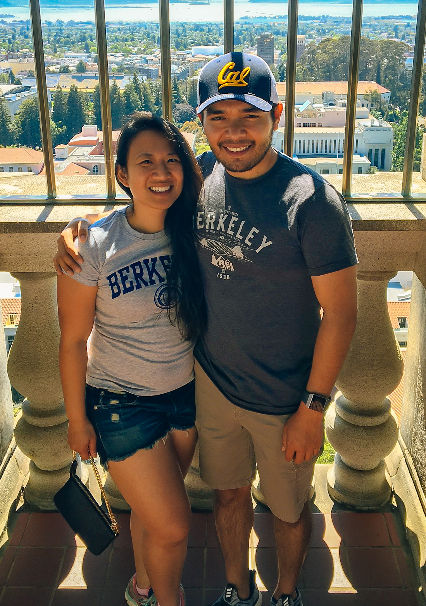
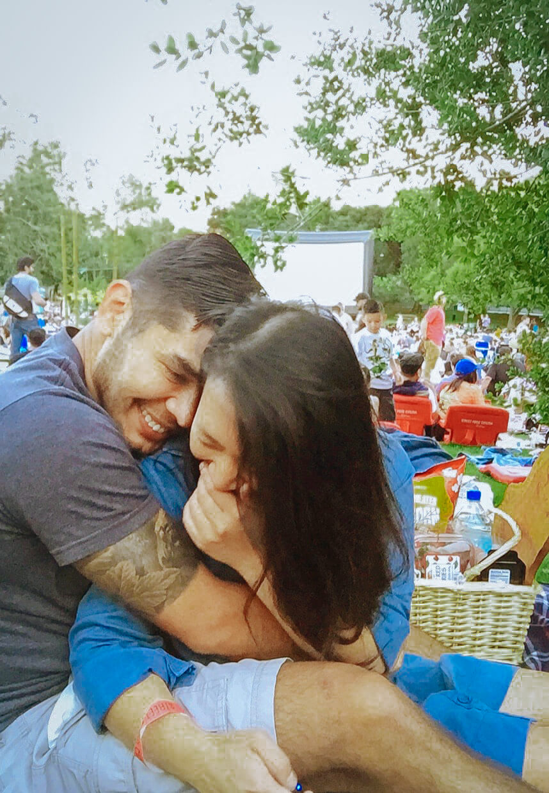
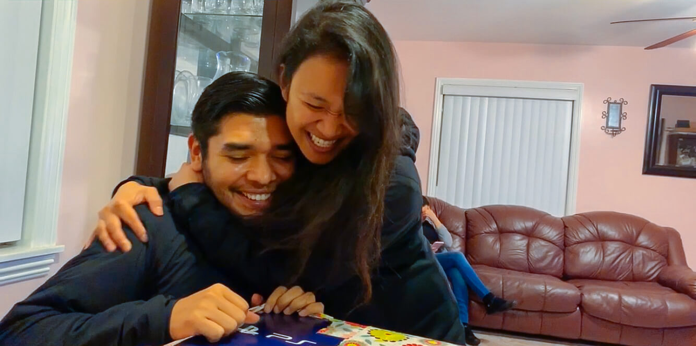
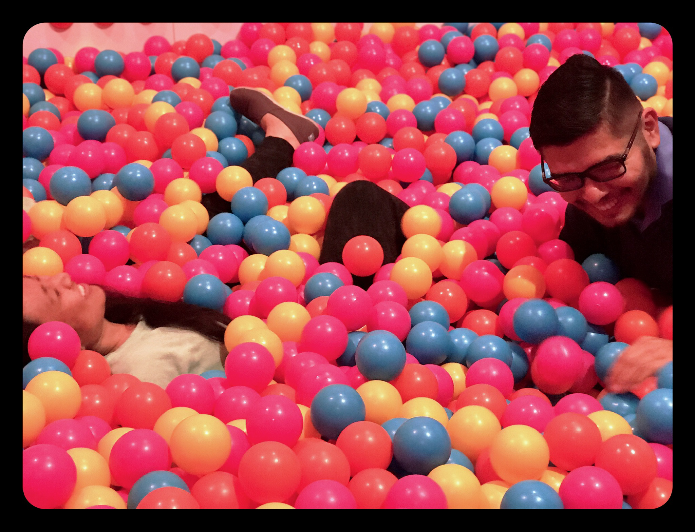

You could hear the random shrieks of laughter and hyphy music blasting down the hallway. Finally after trekking through People’s Park at Dwight and Hillegass, you finally make it to the party buzzing around the campus. It’s November 22, 2008, Jacqui’s 21st “Hot Mess” birthday party and one of the many scenes of Agustin and Madelaine’s divinely orchestrated path of love.
Our story began long before we met. During our early courtship, we would discover many markers of God’s design in bringing us together. For example, we were neighbors not once, but twice. We lived in college dorm buildings next to each other, and again when we moved into apartment buildings right next to each other. We even serendipitously, attended the same college party (Jacqui’s 21st Birthday) hosted at Madelaine’s own apartment! Over the years, we would make many mutual friends, be at the same place at the same time such as hiking Half Dome with different groups on the same weekend or competing against each other at high school cross country meets at Pierce College, all without officially meeting each other! So imagine the glad anticipation when we finally did!
We first met on the Coffee Meets Bagel App, a social media matching dating site that pairs you up through Facebook mutual friends. We had so much to say and so much in common that we would write page-long novels of messages that would take hours to write. Agustin would later confess to drafting his messages on Microsoft Word and spell-checking before sending them to Madelaine. It was enjoyable to connect the dots of all the places we’ve gone and the people we’ve met that we couldn’t wait to finally meet and connect in person like old friends with kindred spirits.
Looking back at our beginnings has been sentimental and sweet. Since then, we’ve learned how to love, care for each other, and stay committed through difficult times. Whether we’re on the trail backpacking through glorious scenery, cheering on the Lakers at home or away games, seeking adrenaline highs on bobsleds and jetskis, yelping our next foodie adventures, or dancing under the moonlight, it’s been a grand and joyous adventure with each other by our sides. And during the days we wrestle through misunderstandings, persevere under stressful times, or comfort each other when we are weak, we’ve learned how to grow in our capacity and strength to love like Jesus.
God has been our unifying knot and we’re forever grateful for his grace in bringing us together and for the hope in our new chapter ahead. We’re excited to encounter more of God’s joy and love in our relationship and reflect His glory through our holy matrimony.